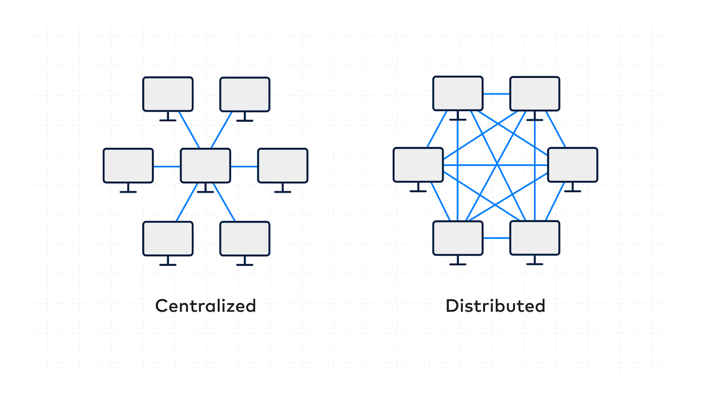

Database Management System
Unit 1: Database Management System
Data, Information, Features of Information
Data: Raw facts, figures, or symbols that have little
meaning on their own.
Information: Processed and meaningful data used for
decision-making.
Features of Information: Accuracy, timeliness,
relevance, completeness, and clarity.
Database and its Purpose
A database is an organized collection of data. Its purpose is to store, manage, and provide efficient access to information while reducing redundancy and ensuring accuracy.
Terminologies in Database
- Table: Collection of rows and columns.
- Field: A column in a table.
- Record: A row in a table.
- Tuple: Another term for a row.
- Object: An entity that represents real-world items.
- Keys: Attributes used to identify records uniquely.
Data Types
Common data types include INTEGER, CHAR, VARCHAR, DATE, FLOAT, and BOOLEAN.
Data Dictionary
A repository containing definitions and descriptions of data elements, metadata, relationships, and constraints used in the database.
Database Management System (DBMS)
A DBMS is software for creating, managing, and manipulating databases.
- Objectives: Efficient data management, security, reduced redundancy.
- Advantages: Integrity, security, concurrency, recovery support.
- Disadvantages: High cost, complexity, requires expertise.
Types of Database Models
- Hierarchical: Tree structure (parent-child).
- Network: Graph-based with many-to-many links.
- Relational: Table-based, widely used.
- Entity-Relationship: Uses entities, attributes, and relationships.
Integrity Constraints and Types
- Domain Constraint: Values must belong to a defined domain.
- Entity Constraint: Primary keys must be unique and not null.
- Referential Constraint: Foreign keys must match primary keys.
- Key Constraint: Uniqueness of keys in a relation.
Normalization
Process of structuring data to reduce redundancy.
- 1NF: Atomic values only.
- 2NF: No partial dependency on composite key.
- 3NF: No transitive dependency.
- Advantages: Reduces redundancy, improves integrity.
- Disadvantages: More complex joins and queries.
Centralized and Distributed Database
Centralized: Data stored at one location. Easy to
manage but less reliable.
Distributed: Data spread across multiple sites.
Reliable and scalable but complex.

Database Security
Protects databases from unauthorized access, misuse, or corruption.
- Challenges: Unauthorized access, SQL injection, data breaches.
- Security Measures: Authentication, encryption, access control, backups.
Database Administrator (DBA)
A DBA ensures smooth operation, backup, recovery, and security of the database. Roles include installation, tuning, access control, and policy enforcement.
Entity-Relationship (ER) Diagrams
ER diagrams visually represent entities, attributes, and relationships.
- Entity: Real-world object (e.g., Student).
- Attributes: Properties (e.g., Name, Roll).
- Relationships: Associations between entities.
- Cardinality: One-to-one, one-to-many, many-to-many.
- Degree: Number of entities in a relationship.
- Symbols: Rectangles (entities), ellipses (attributes), diamonds (relationships).
SQL (Structured Query Language)
- DDL: CREATE, ALTER, DROP.
- DML: SELECT, INSERT, UPDATE, DELETE.
Data Constraints
- NOT NULL
- UNIQUE
- PRIMARY KEY
- AUTO INCREMENT
Operators
AND, OR, NOT are logical operators used in conditions.
WHERE Clause
Used to filter records based on conditions.
ORDER BY
Used to sort records in ascending or descending order.
SQL JOINs
- INNER JOIN: Returns records with matching values.
- LEFT JOIN: Returns all records from left table + matched from right.
- RIGHT JOIN: Returns all records from right table + matched from left.
- FULL JOIN: Returns all records when there is a match in either table.
SELECT Students.Name, Classes.ClassName
FROM Students
INNER JOIN Classes ON Students.ClassID = Classes.ClassID;
Past Year and Model Questions (2020-2024)
1. What is Database and DBMS? List out the advantages and disadvantages of DBMS.
A database is a structured collection of data that allows for efficient retrieval, management, and storage. It is designed to organize data in such a way that it can be easily accessed, managed, and updated. A Database Management System (DBMS) is a software system that enables users to define, create, maintain, and control access to the database. DBMS acts as an interface between the end user and the database, managing data, the database engine, and the database schema to facilitate the organization and manipulation of data.
Advantages of DBMS:
- Reduces data redundancy through normalization and central management.
- Improves data integrity and accuracy by enforcing constraints.
- Allows multiple users to access data simultaneously without conflict.
- Provides security features to protect sensitive data.
- Backup and recovery features to prevent data loss.
Disadvantages of DBMS:
- High initial cost for setup and maintenance.
- Complexity in installation and management.
- May require additional hardware resources and specialized personnel.
2. Differentiate between file processing system and DBMS. Give at least four points.
- Data Redundancy: File processing systems store duplicate data across multiple files. DBMS reduces redundancy by centralizing data.
- Data Consistency: Data inconsistencies are common in file systems. DBMS ensures consistency with rules and relationships.
- Data Access: File systems use custom programs. DBMS allows data access using queries (e.g., SQL).
- Security: File systems lack built-in security. DBMS provides granular control over data access.
3. Explain the different models of DBMS with advantages and disadvantages.
Hierarchical Model: Data is organized in a tree structure. Each child has one parent.
Advantages: Simple and easy to design. Efficient for fixed relationships.
Disadvantages: Complex relationships are difficult. Data redundancy may occur.
Network Model: Uses graph structures with multiple relationships.
Advantages: Allows complex relationships. Faster access.
Disadvantages: More complex. Difficult to manage.
Relational Model: Organizes data into tables with rows and columns.
Advantages: Simple structure. Easy querying with SQL.
Disadvantages: Joins may reduce performance. Limited in handling complex data types.
4. What is a relational database? How is it different from other database models?
A relational database organizes data into tables (relations) consisting of rows (tuples) and columns (attributes). Each table represents one entity type, and relationships are established using keys. Unlike hierarchical or network models, it uses structured queries and enforces rules through constraints and normalization.
5. What is data redundancy? How does DBMS help in reducing it?
Data redundancy refers to unnecessary repetition of data. It leads to wastage of storage and data inconsistency. DBMS reduces redundancy using normalization, centralized storage, and relational integrity which avoid storing the same data at multiple locations.
6. Differentiate between centralized and distributed database systems.
Centralized Database: Stored at a single location. Easy to manage but prone to failure and slower remote access.
Distributed Database: Data is stored across multiple locations. More reliable and scalable, but complex to manage and secure.
7. Who is Database Administrator (DBA)? What are the major responsibilities of DBA?
A Database Administrator (DBA) manages the database system to ensure data availability, integrity, and security. Responsibilities include installation, configuration, backup, recovery, performance tuning, security management, and ensuring compliance with policies.
8. Define normalization. Explain 1NF, 2NF and 3NF with suitable examples.
Normalization is a process to structure a relational database to reduce redundancy and improve integrity. It involves dividing large tables into smaller ones and defining relationships.
1NF: Atomic values. E.g., a table should not have multiple phone numbers in one column.
2NF: No partial dependency on primary key. Applies when table has a composite key.
3NF: No transitive dependency. Non-key attributes should not depend on other non-key attributes.
9. Explain the terms: primary key, foreign key, and candidate key with examples.
Primary Key: A unique identifier for each record. E.g., StudentID in Students table.
Foreign Key: A field that refers to the primary key in another table. E.g., ClassID in Students referring to Classes table.
Candidate Key: Any attribute that can uniquely identify records. E.g., both Email and StudentID if they’re unique.
10. What is SQL? Explain its components and common functions.
Structured Query Language (SQL) is used to communicate with databases. Its components include:
- DDL: CREATE, ALTER, DROP
- DML: SELECT, INSERT, UPDATE, DELETE
- DCL: GRANT, REVOKE
- TCL: COMMIT, ROLLBACK
Common functions: COUNT(), SUM(), AVG(), MAX(), MIN()
11. Write SQL commands to perform the following operations:
CREATE TABLE Students (
Id INT PRIMARY KEY,
Name VARCHAR(50),
Class VARCHAR(20),
Marks INT
);
INSERT INTO Students VALUES (1, 'Anita', '10A', 78);
INSERT INTO Students VALUES (2, 'Sita', '10A', 82);
INSERT INTO Students VALUES (3, 'Ram', '10B', 76);
SELECT * FROM Students;
UPDATE Students SET Marks = 85 WHERE Name = 'Anita';
DELETE FROM Students WHERE Id = 3;
12. Define the following terms:
- Data Dictionary: Metadata repository containing data definitions.
- Primary Key: Unique identifier of a record.
- Relationship: Association between tables using keys.
- Data Manipulation Language (DML): Operations to manipulate data (INSERT, UPDATE, DELETE).
- Structured Query Language (SQL): Standard query language for relational databases.
- Data Integrity: Accuracy and consistency of data.
- Data Definition Language (DDL): SQL subset for defining schema.
- Data Security: Protection from unauthorized access.
- Database System: A combination of DBMS software and database.